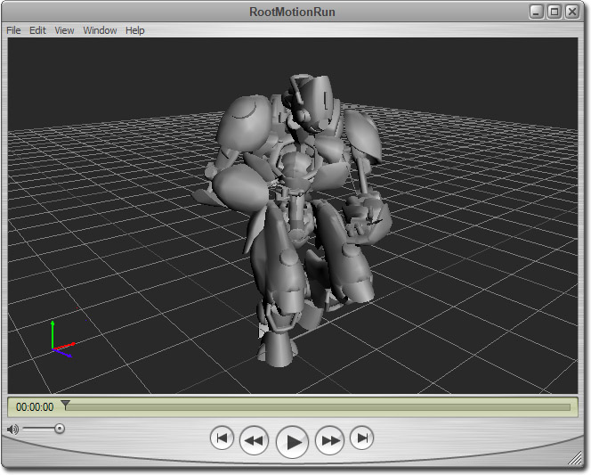
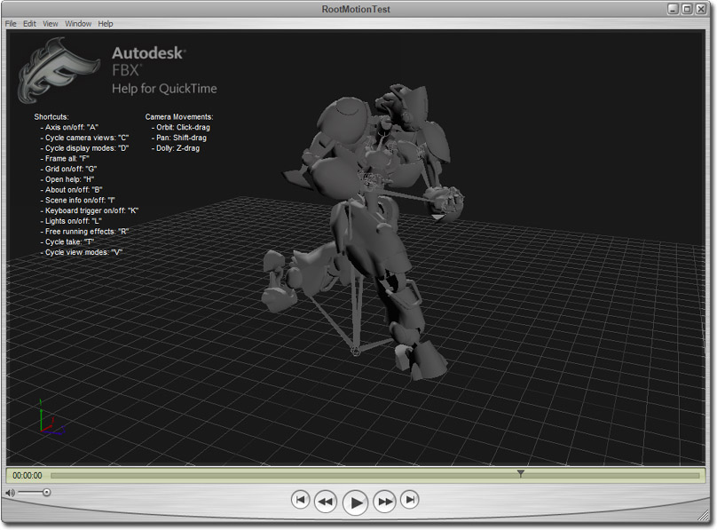

UDN
Search public documentation:
DevelopmentKitGemsViewingFBXWithQuickTimeCH
English Translation
日本語訳
한국어
Interested in the Unreal Engine?
Visit the Unreal Technology site.
Looking for jobs and company info?
Check out the Epic games site.
Questions about support via UDN?
Contact the UDN Staff
日本語訳
한국어
Interested in the Unreal Engine?
Visit the Unreal Technology site.
Looking for jobs and company info?
Check out the Epic games site.
Questions about support via UDN?
Contact the UDN Staff
使用 QuickTime 查看 FBX
可以与 PC 和 Mac 兼容
概述
下载插件和 Quick Time
打开 FBX 文件

回放动画

其他控件

- Rotating the camera（旋转相机） - 在视口中用鼠标左击然后按住不放。拖动鼠标将会旋转相机。
- Panning the camera（平移相机） - 按住 Shift 键，然后在视口中使用鼠标左击按住不放。拖动鼠标将会平移相机。
- Zooming the camera（缩放相机） - 按住 Z 键，然后在视口中使用鼠标左击按住不放。向前或向后拖动鼠标将会缩放相机。
- *Cycling between camera views（在相机视图之间来回切换） - 按下 C 键就可以在相机视图模式之间进行切换。
- Getting more help（获取更多帮助） - 按下 H 键调出更多帮助选项。
